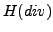

We study  preconditioning for the saddle-point systems that arise in a stochastic Galerkin mixed formulation of the steady-state diffusion problem with random data. The key ingredient is a multigrid V-cycle for a weighted, stochastic operator, acting on a certain tensor product space of random fields with finite variance. The traditional deterministic Arnold-Falk-Winther multigrid algorithm is exploited by varying the spatial discretization from grid to grid whilst keeping the stochastic discretization fixed. We extend the deterministic analysis to accommodate the modified operator and establish spectral equivalence bounds with a new multigrid V-cycle operator that are independent of the discretization parameters. We then implement multigrid within a block-diagonal preconditioner for the full stochastic saddle-point problem, summarize eigenvalue bounds for the preconditioned system matrices and investigate the impact of all the discretization parameters on the convergence rate of preconditioned MINRES.